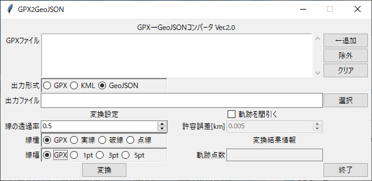
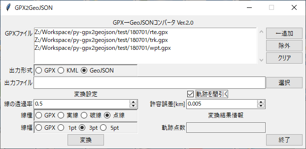
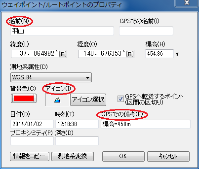
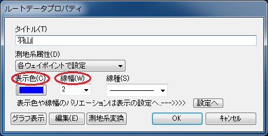
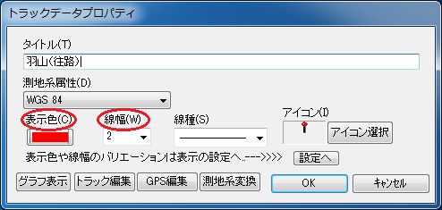

GPX2GeoJSON（GPX→GeoJSONコンバータ）Python版
- 更新情報（2021-03-01）：GPX2GeoJSON Ver.2.0 公開。スクリプト言語をPerlからPython 3に変更。

- オリジナルのGPX2GeoJSON（Perl版）のサイトはこちら。
- このサイトに関するご意見・ご質問・ご要望は、サポート掲示板へお願いします。
GPX2GeoJSONとは？
GPX2GeoJSON（GPX→GeoJSONコンバータ）は、カシミール3Dで保存したGPXファイル（拡張子 .gpx）を、各種ウェブ地図に上乗せして表示できるGeoJSONファイル（拡張子 .geojson）に変換するデスクトップアプリケーションです。Windows 10、macOS、Linuxで動作します。2008年1月に公開したGPX2JSGI（GPX→KMLコンバータ）と同様、作者のホームページ（あにねこ登山日誌）の山行記録に添えるルート地図を作成するためのユーティリティとして開発したものです。当初は上乗せデータとしてJSGIファイル、2013年12月からはKMLファイルを利用していましたが、主流になりつつあるGeoJSONファイルへ2019年2月に移行しました。その際に、コンセプトはGPX2JSGIから引き継ぎつつ、全く新規に開発したアプリケーションです。Ver. 1.0より、KMLファイルやGPXファイルの出力機能を追加しました。Ver. 2.0よりスクリプト言語をPerlからPython 3に変更しました。
主な機能と特徴
- カシミール3Dで保存したGPXファイルを、国土地理院が提案するスタイルつきGeoJSON規約に準拠したGeoJSONファイル、またはKMLウェブ地図プロファイルに準拠したKMLファイルに変換します。
- グラフィカルユーザインタフェース（GUI）を備え、ファイル形式の中身について知らなくても、簡単に変換できます。
- 変換したGeoJSONファイルやKMLファイルは、地理院地図にドラッグ＆ドロップして、すぐに表示を確認することができます。
- 複数のGPXファイルをまとめて、単一のファイルに変換します（マージ機能）。
- 変換の際、トラックポイントをcross track errorアルゴリズムを用いて間引くことができます（GPSBabelを利用）。
- GPX2GeoJSONはPython 3で記述され、ソースコードはGitHubで公開しています。
- 実行には、Python 3とGPSBabelが必要です。Windows 10、macOS、Linuxで動作します。
ギャラリー
変換したGPXファイル、KMLファイル、GeoJSONファイルは上乗せデータとしてWeb地図で表示することができます。図1はOpenLayers 6を用いてサイトに埋め込み表示を行なった例です。なお、GPXファイルはZ座標も保持しているため、他の二つと比べてファイルサイズが大きくなっています。
| (a) GPXファイル（26348 bytes） |
| (b) KMLファイル（9031 bytes） |
| (c) GeoJSONファイル（8965 bytes） |
| 図1 OpenLayers 6を用いた上乗せデータのWeb地図での表示例 |
動作環境
Windows 10、macOS、Linuxで動作します。実行に際してはPython 3、Pythonのlxmlライブラリ、GPSBabelが必要です。
著作権について
GPX2GeoJSONのソフトウェアおよび付属文書の著作権は、作者のあにねこ（anineco@nifty.com）が保持します。本ソフトウェアはMITライセンスに基づいて無償で提供され、複製を入手した人は商用・非商用を問わず自由に使用、複写、変更、結合、掲載、配布することができます。本ソフトウェアの複製または変更した物を掲載、配布する場合は、ソースコード中の著作権表示は削除できません。
免責事項
本ソフトウェアは無保証です。特に、変換結果のデータ形式の正当性・正確性については保証しません。作者は本ソフトウェアに起因するいかなる義務（サポートを含む）についても責任を負いません。
導入方法
準備
Windowsの場合、以下の手順でPython 3, lxml、GPSBabelのインストールが必要です。macOS、Linuxについては、それぞれ、パッケージ管理ソフトウェアを用いて簡単にインストール可能なので、説明は省略します。
Python 3
公式サイトhttps://www.python.org/から最新版（2021-03-01現在、python-3.9.2-embed-amd64.zip）をダウンロードして、インストールします。Windows版Pythonのインストールが参考になります。インストールの際、"Add Python 3.x to PATH"にチェックを入れて下さい。
lxml
コマンドプロンプトを起動し、次のコマンドを実行します。
pip3 install lxml
追加インストールされているライブラリとそのバージョンは、次のコマンドで一覧表示できます。
pip3 list
lxmlのバージョンは>=4.5であることが必要です。
GPSBabel
公式サイトhttps://www.gpsbabel.org/から最新版（2021-03-01現在、GPSBabel-1.7.0-Setup-exe）をダウンロードしてインストールします。インストール先は通常'C:\Program Files (x86)\GPSBabel'です。これと異なる場合は、gpsbabel.pyの中で指定されているgpsbabel.exeのパスを書き換える必要があります。
インストール
図2 GitHubダウンロード画面
まず、GitHubからGPX2GeoJSONの最新版をダウンロードします。https://github.com/anineco/py-gpx2geojsonにアクセスするとGPX2GeoJSONのリポジトリ画面が開きます。↓Codeをクリックすると図2の小窓が開き、続いてDownload ZIPをクリックするとダウンロードが始まります。
ダウンロードしたZIPファイルを適当なフォルダの下で展開すると、下記のようにファイルが配置されます。赤字のgpx2geojson.pywが、メインのGUIアプリケーションです。
py-gpx2geojson ├── gpx2geojson.pyw （GUIアプリケーション） ├── gpx2geojson_cli.py（CUIアプリケーション） ├── iconlut.py （アイコン変換表） ├── iconlut_anineco.py（アイコン変換表：あにねこ登山日誌専用） ├── gpsbabel.py （GPSBabel呼び出し） ├── extensions.py （カシミール3Dで拡張されたGPXの読み取り） ├── togeojson.py （geojsonへの変換ルーチン） ├── tokml.py （KMLへの変換ルーチン） ├── config.py （動作パラメータ定義） ├── const.pl （共通定数定義） ├── docs/* （GitHub Pages） └── test/* （テスト用データ）
アンインストール
GPX2GeoJSONのアンインストールは、展開したフォルダをまるごと削除して下さい。GPX2GeoJSONを一度起動して終了すると、ホームフォルダ直下に.gpx2geojsonというファイルが作成されます。アンインストールの際には、このファイルも削除して差し支えありません。
操作方法
起動
gpx2geojson.pyw（のアイコン）をクリックすると、GUIが起動して図3のような窓が開きます。

図3 GUI画面
入出力ファイル指定
変換したいGPXファイル（1個以上）を、右側の『←追加』ボタンを押してファイル選択ダイアログを開き、「GPXファイル」のリストに追加します。ファイル選択ダイアログでは、ControlキーやShiftキーを押しながらクリックすることにより、複数ファイルを同時に選択することができます。リスト中のファイルをマウスで選択して『除外』ボタンを押すと、リストから取り除くことが出来ます。また、『クリア』ボタンを押すと、リストは空になります。
出力形式をGPX、KML、GeoJSONの中から一つ選択します。
次に、「出力ファイル」を右側の『選択』ボタンを押して指定します。拡張子を指定しなかった場合は、出力形式に応じて自動的に付加されます。
線の透過率、線種、線幅の指定
線の透過率は元のGPXファイルにはない情報です。スピンボックスで0.0〜1.0の値を0.1刻みで指定します。線種と線幅は元のGPXファイルに含まれる情報です。これをそのまま出力ファイルに反映させる場合には、『GPX』にチェックを入れます。その他の場合、指定した値で上書きされます。
トラックポイント間引き設定
トラックポイントを間引く場合は、「軌跡を間引く」欄にチェックを入れて下さい。すると、その下の「許容誤差」のスピンボックスが編集可能になるので、正の数値（単位はkm）を設定します。間引きには、cross track errorアルゴリズムを用いたGPSBabelのSimplifyフィルタを利用しています。許容誤差を大きくすると間引かれる点数が増えますが、軌跡の細部の形状が失われるので、調節が必要です。最初は初期設定値（0.005km）で試してみて下さい。

図4 変換準備完了後のGUI画面
変換実行
全ての必要項目を設定したのちに『変換』ボタンを押すと、変換結果が「出力ファイル」で指定したファイルに出力されます。変換が成功すると、変換後のトラックポイント数が「軌跡点数」の欄に表示されます。『終了』ボタンを押すと、プログラムを終了します。
変換仕様
変換仕様については、GPX2JSGIの仕様をほぼそのまま踏襲しています。
ウェイポイント
カシミール3Dの「ウェイポイント/ルートポイントのプロパティ」（図5）の設定項目が、地理院地図でどのように表示されるかを説明します。

図5 ウェイポイント/ルートポイントのプロパティ
- アイコン：カシミール3Dで指定したアイコンは、GPX形式の中では「コード番号」で記録されます。GPX2GeoJSONはiconlut.pyの設定に基づいて、コード番号を対応するシンボル画像のURLに変換します。配布しているiconlut.pyの内容は簡単なPythonスクリプトで、次のようなものです。
この設定では、iconlut.py
#!/usr/bin/env python3 # -*- coding: utf-8 -*- def url(icon): return 'https://map.jpn.org/icon/' + icon + '.png' def size(icon): return [24, 24] def anchor(icon): return [12, 12] # __END__https://map.jpn.org/に設置済のシンボル画像にアクセスします。コード番号とシンボル画像の対応をアイコン変換表に示します。この画像セットは、カシミール3Dのアイコンの全てに対応しています。 - 名前、GPSでの備考：地理院地図において、シンボル（点型データ）にマウスポインタを重ねると、ポップアップ窓で表示されます。GPSでの備考にはシンボルの属性情報を「項目名1=値1,項目名2=値2,…」のように項目名と値を「=」（イコール）で接続し、カンマ区切りで列挙して記述します。
ルート
カシミール3Dの「ルートデータプロパティ」（図6）の設定項目が、地理院地図でどのように表示されるかを説明します。

図6 ルートデータプロパティ
- 表示色：カシミール3Dで指定した色で表示されます。透過率はGPX2GeoJSONで変換する際に指定します。
- 線幅：カシミール3Dで指定した幅（1〜9）を地図上の幅（単位はピクセル）として表示します。地図の縮尺を変えても線幅は変化しません。
- 線種：カシミール3Dで指定した種類のうち、実線、短長の破線、点線、一点鎖線、二点鎖線が表示可能です。
カシミール3Dでは、ルート上の各ポイントに対しても図4の「ウェイポイントのプロパティ」を開いて、全く同様のプロパティを設定することができます。ルートポイントもウェイポイントと同様にGeoJSON形式に変換されました。ただし、アイコンが「地名」グループの「なし」（コード番号903001）のルートポイントは例外で、変換されません（「なし」アイコンのウェイポイントは変換されます）。ルートポイントを変換したくない場合は、アイコンを「なし」に設定して下さい。複数のルートポイントを選択してから「ウェイポイントのプロパティ」を開くと、アイコンの一括変更が可能です。
トラック
カシミール3Dの「トラックデータプロパティ」（図7）の設定項目が、地理院地図でどのように表示されるかを説明します。

図7 トラックデータプロパティ
- 表示色、線幅、線種：ルートの場合と同様です。
- アイコン：トラックデータに指定したアイコンは変換対象外です。
更新履歴
| 2021-03-01 | GPX2GeoJSON Ver.2.0 公開。スクリプト言語をPerlからPython 3に変更。 |
| 2020-07-07 | GPX2GeoJSON Ver.1.0 公開。GPX、KMLファイル出力機能を追加。 |
| 2019-07-07 | GPX2GeoJSON Ver.0.9 公開。 |
© 2019-2021 あにねこ電脳覚書